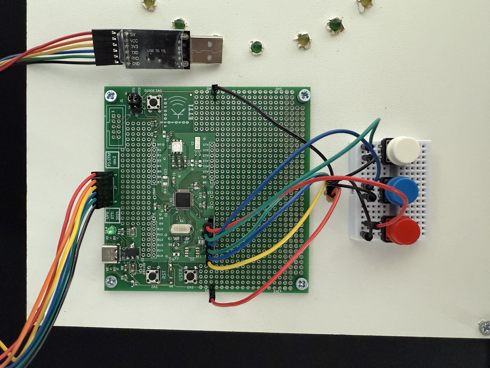
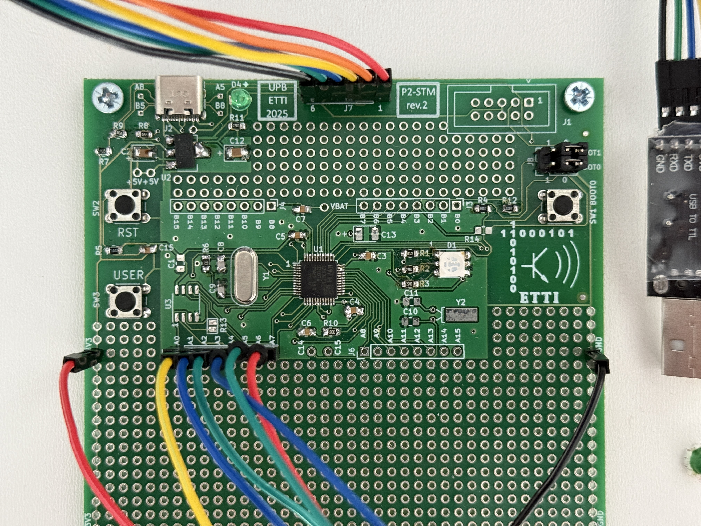
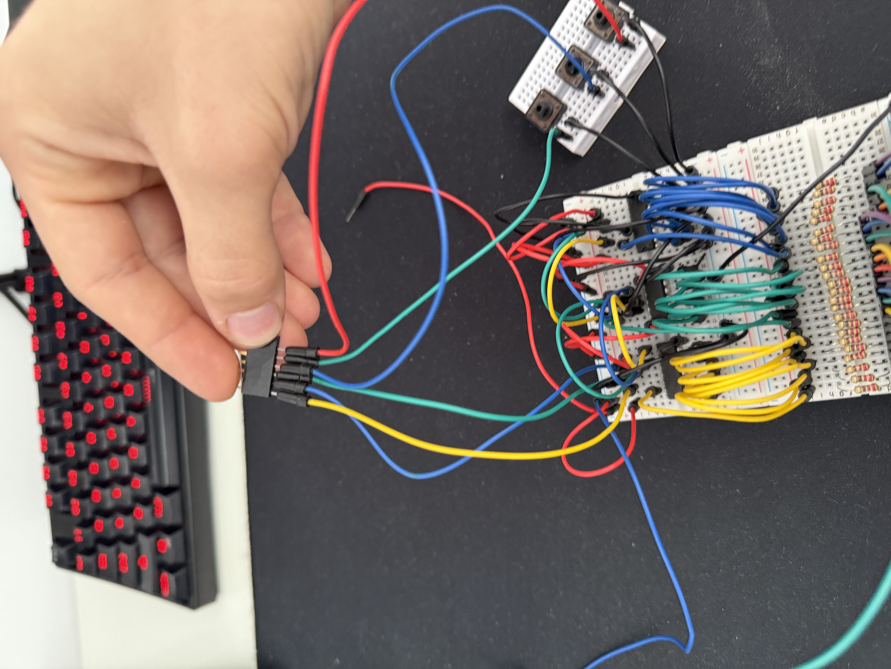
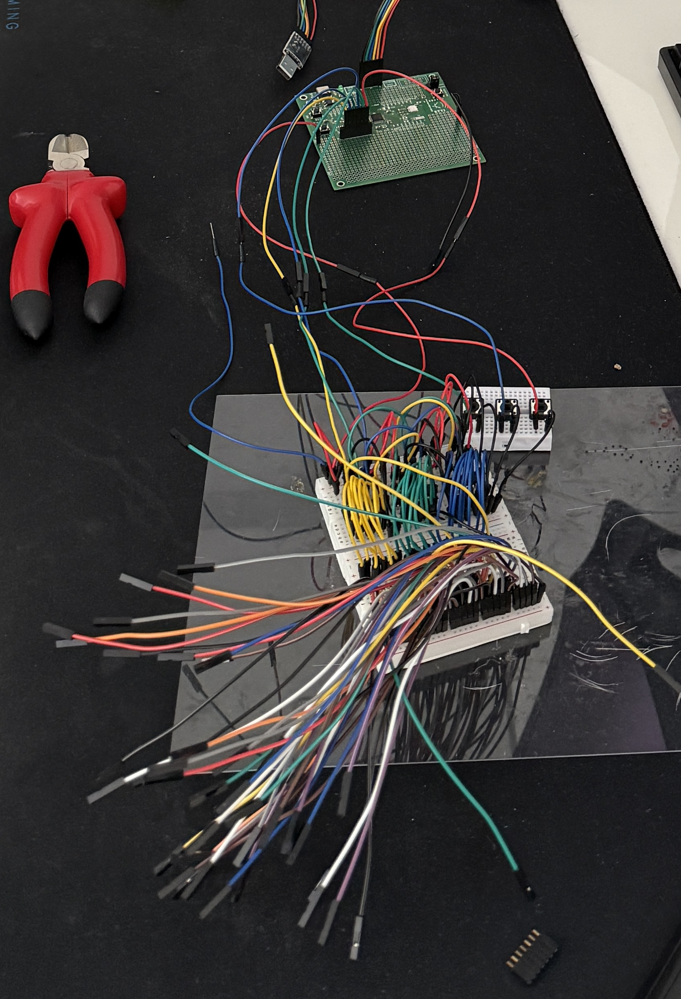
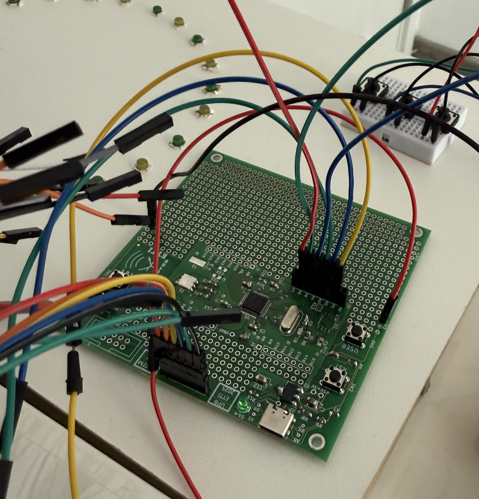
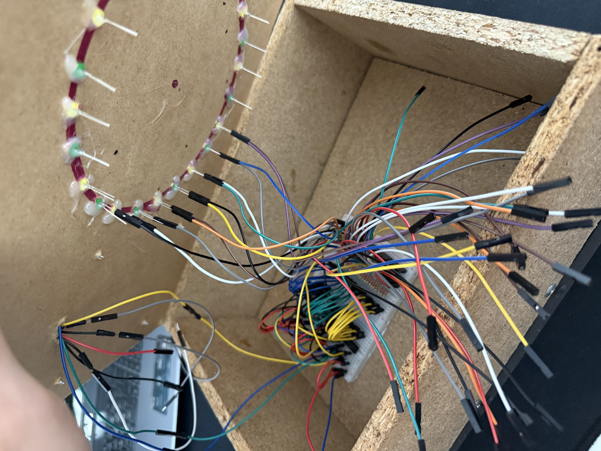
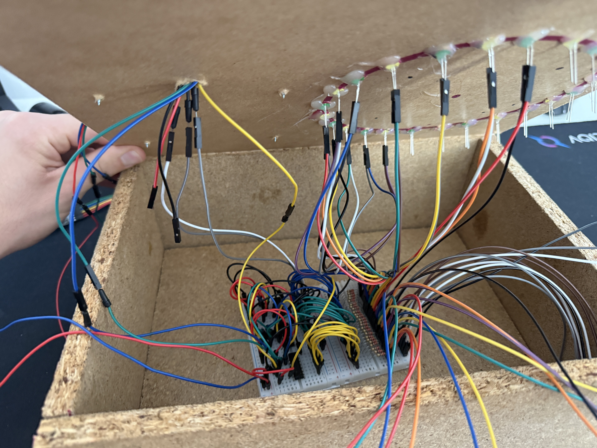
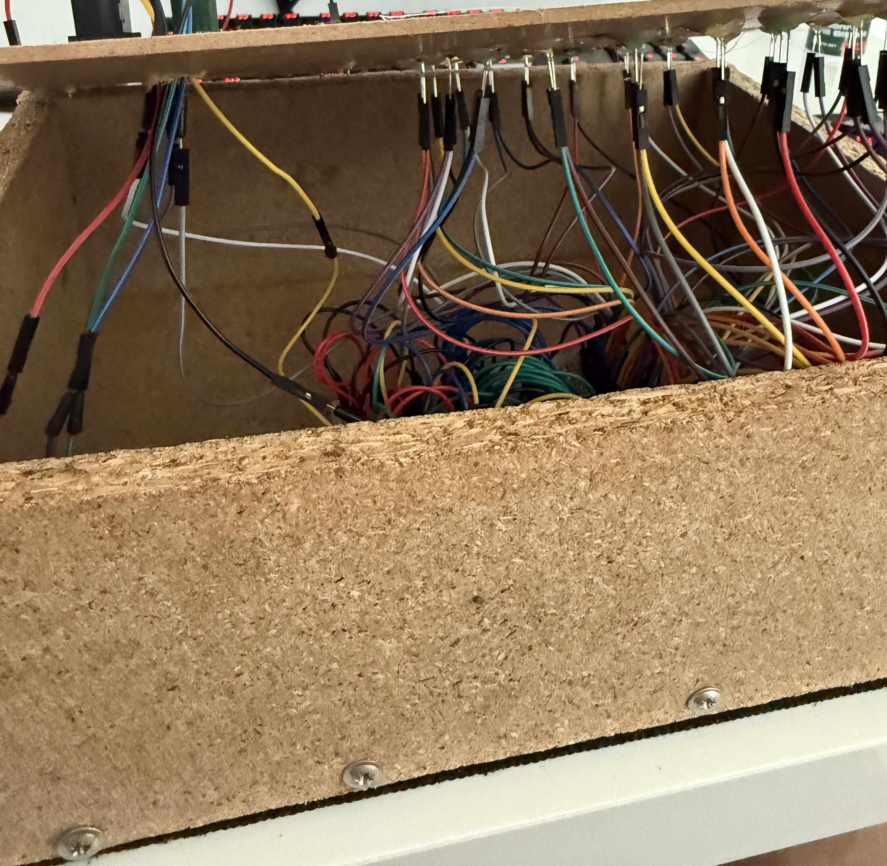
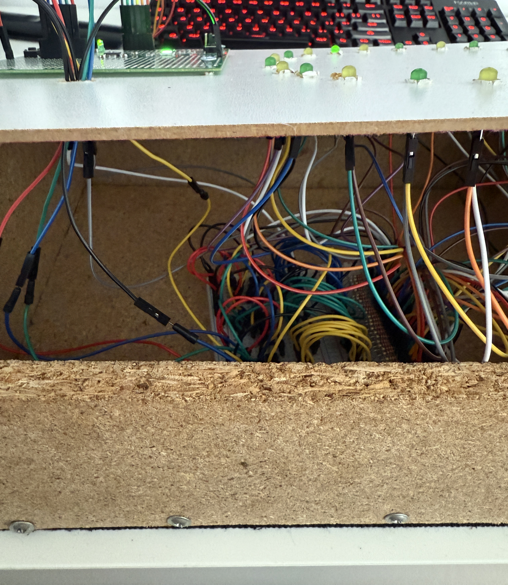

1. Modul de implementare
Detalii despre interfața cu utilizatorul și conexiunile principale
Jocul de ruleta a fost implementat pe un microcontroller "STM32F103CBTx". Interfata cu utilizatorul este realizata prin 24 de leduri (12 verzi si 12 galbene) legate la 24 de rezistente de 220 ohm care sunt conectate la pinii de iesire a 3 registre de deplasare 74HC595. Am folosit cate un registru pentru 8 leduri, astfel primele 8 leduri conectate la primul registru index 0-7, urmatoarele 8 conectate la al doilea registru index 8-15 si ultimele 8 conectate la al treilea registru index 16-23.
Registrele primesc informatiile in felul urmator: DS(pin 14) conectat la GPIO_OUTPUT PA1 al microcontrollerlui, SHCP (pin 11) GPIO_OUTPUT PA2 al microcontrollerlui, STCP (pin 12) GPIO_OUTPUT PA3 al microcontrollerlui, OE(pin 13) la gnd(ground), MR(pin10) conectat la sursa de alimentare de 3.3V, VCC(pin 16) conecta la sursa de alimentare de 3.3V, pinul de gnd conectat la masa, cei 8 pini de output respectiv Q0-Q7 conectati la rezistentele care ulterior sunt conectate la cele 24 de leduri( cate 8 rezistente pentru fiecare registru).
Jocul are si 3 butoane conectate in felul urmator GPIO_INPUT PA4 al microcontrollerlui pentru butonul de selectare pariu, urmatorul la GPIO_INPUT PA5 al microcontrollerlui pentru butonul de confirmare si GPIO_INPUT PA6 al microcontrollerlui pentru butonul de start.
- 3 butoane control
- 3 registre (PA1)
- Convertor USB-TTL
- 24 Led-uri afișaj
- Fire conexiuni
- 3 Breadboard-uri
Specificații Componente
Detalii tehnice despre piesele utilizate în ansamblu
- 8 biți intrare serială, 8 biți ieșire paralelă
- Tehnologie CMOS
- Tensiune de alimentare: 2V - 6V DC
- Output 3-State (până la 15 intrări LSTTL)
- Memorare cu bistabil de tip D
- Consum maxim: 80uA
- Timp de propagare: 13ns
- Curent de ieșire de: +-20mA, la 5V
- Frecvență maximă de operare: 25MHz @ 4.5V
- Tip: normally open
- Pull-up intern activat
- Dimensiuni: 6x6x6 mm
- Tensiune operare: 3.3V
- Tip chip: CH340 / CP2102
- Scop: programare/debug UART
- Tensiune logică: 3.3V
2. Descrierea hardware
Poze din timpul asamblării și tabelul cu lista completă de materiale (BOM)
Proiectul realizat complet

Placa de test (Am lipit toate componentele necesare pentru funcționarea microcontrolerului și am realizat conexiunile pentru restul componentelor hardware)


Imagini din timpul asamblării








| Cantitate | REF | Valoare | Capsulă | Furnizor | Preț estimativ |
|---|---|---|---|---|---|
| 1 | U1 | STM32F103CBTx | SMD | UPB | - |
| 6 | C3, C4, C5, C6, C7, C15 | 100nF | SMD0805 | UPB | - |
| 2 | C8, C9 | 20pF | SMD0805 | UPB | - |
| 2 | C2, C12 | 10uF | SMD0805 | UPB | - |
| 1 | R10 | 10 Ω | SMD0805 | UPB | - |
| 1 | R5 | 10k Ω | SMD0805 | UPB | - |
| 1 | R6 | 1M Ω | SMD0805 | UPB | - |
| 3 | R1, R2, R3 | 220 Ω | SMD0805 | UPB | - |
| 2 | R4, R12 | 100k Ω | SMD0805 | UPB | - |
| 1 | R7 | 1.5k Ω | SMD0805 | UPB | - |
| 3 | R8, R9, R11 | 220 Ω | SMD0805 | UPB | - |
| 1 | U2 | 3.3V | LM11175 | UPB | - |
| 1 | D4 | LED verde | THT | UPB | - |
| 1 | Y1 | cuart | THT | UPB | - |
| 3 | SW1, SW2, SW3 | THT | UPB | - | |
| 1 | J7 | HEADER 1X6 | THT | UPB | - |
| 1 | J8 | HEADER 2X3 | THT | UPB | - |
| 1 | D1 | LED RGB | SMD | UPB | - |
| 2 | BOOT 0,1 | JUMPERI | - | UPB | - |
| 1 | J2 | CONECTOR USB | SMD | UPB | - |
| 12 | LED-uri verzi | 5mm | THT | Optimus digital | - |
| 12 | LED-uri galbene | 5mm | THT | Optimus digital | - |
| 24 | Rezistente | 220 Ω | THT | Optimus digital | - |
| 3 | 74HC595 | DIP-16 | THT | Optimus digital | - |
| 3 | Butoane | - | THT | Optimus digital | - |
3. Descrierea software
Biblioteci, funcții principale și resurse procesor
Software-ul gestionează aprinderea LED-urilor într-o secvență de ruletă, folosind un seed generat pe baza timpului apăsării. Funcția debounce a fost implementată pentru a preveni efectele de apăsare multiplă ale butoanelor.
Software-ul de test a fost dezvoltat pentru a demonstra accesarea resurselor hardware ale microcontrollerului STM32 folosind biblioteca HAL. Codul este generat automat cu STM32CubeMX, iar modificările facute sunt încadrate între secțiunile comentate /* USER CODE BEGIN / și / USER CODE END */, pentru a fi păstrate la regenerarea codului. Funcționalitățile implementate includ: Inițializarea resurselor hardware (GPIO, TIM2, UART1, RCC etc.) a fost realizată cu STM32CubeMX: Clockul sistemului este configurat la 72MHz folosind un oscilator extern de 8MHz și PLL x9. Timer2 este configurat pentru a genera întreruperi la fiecare 10ms (Prescaler 7199, Period 100) UART1 funcționează la 9600 bps, fără paritate, 8 biți de date, mod asincron, cu întreruperi activate pentru recepție. Aplicația este implementată pe o platformă STM32 folosind bibliotecile STM32Cube HAL, fiind structurată în jurul unei bucle infinite și a tratării evenimentelor prin întreruperi.
Acest cod reprezintă implementarea completă a unui joc de tip ruletă electronică pe o platformă STM32 folosind HAL. Jocul este controlat prin butoane fizice, afișează rezultatele pe un panou LED și comunică cu utilizatorul prin interfața UART. Codul este organizat în mai multe funcții relevante pentru desfășurarea jocului.
Funcția selectBet() permite utilizatorului să selecteze o poziție (între 0 și 23) pe care dorește să parieze, utilizând un buton pentru navigare și altul pentru confirmare. Poziția selectată este afișată în timp real pe panoul de LED-uri, controlat prin funcțiile shiftOut() (care transmite în serie date către LED-uri) și displayLED() (care afișează un anumit LED în funcție de indexul selectat).
Funcția principală a jocului, rouletteGame(uint8_t bet), simulează rotirea ruletei. Aceasta aprinde secvențial LED-urile de pe panou într-un mod progresiv încetinitor, pentru a crea efectul de ruletă care se oprește aleatoriu pe o poziție. Dacă LED-ul final corespunde pariului utilizatorului, un mesaj de câștig este transmis prin UART și LED-ul câștigător clipește; în caz contrar, se afișează un mesaj de pierdere.
Pe lângă logica de joc, codul gestionează și interacțiunea utilizatorului prin UART cu funcția HAL_UART_RxCpltCallback(), care răspunde la comenzi text trimise prin portul serial. Temporizările sunt gestionate de HAL_TIM_PeriodElapsedCallback(), care controlează starea LED-urilor RGB, simulând un efect de "puls" în funcție de starea jocului (de exemplu, schimbarea vitezei de iluminare prin apăsarea unui buton).
În main(), logica principală este structurată într-o mașină de stări (SM_State), cu două moduri de funcționare: iluminare rapidă și lentă, schimbabile printr-un buton fizic (USER). În bucla principală, apăsarea unui alt buton declanșează procesul de selecție a pariului și inițiază jocul.
Acest proiect demonstrează un control integrat între perifericele microcontrollerului STM32 — GPIO, UART, TIM — pentru a implementa un joc interactiv în timp real.
- GPIO OUT: PA1, PA2, PA3
- GPIO IN: PA4, PA5, PA6
- ADC: 10 biți intern
Debounce-ul filtrează fluctuațiile, iar ADC-ul modulo 41 obține o distribuție pseudoaleatoare.
- Text (Flash): 26 344 byte
- Data (RAM init): 472 bytes
- BSS (RAM neinit): 6672 bytes

4. Rezultate și Concluzii
Proiectul a reușit să respecte cerințele inițiale. LED-urile rulează în secvență corespunzătoare, iar interacțiunea prin cele trei butoane funcționează stabil.
Concluzii tehnice- Utilizarea 74HC595 a permis controlul a 24 LED-uri cu 3 pini
- Funcția de debounce a stabilizat inputul stabil
- Folosirea ADC-ului pentru seed a fost eficientă
- HAMELECOM Proiect 2
- YouTube - registru deplasare
- Wikipedia